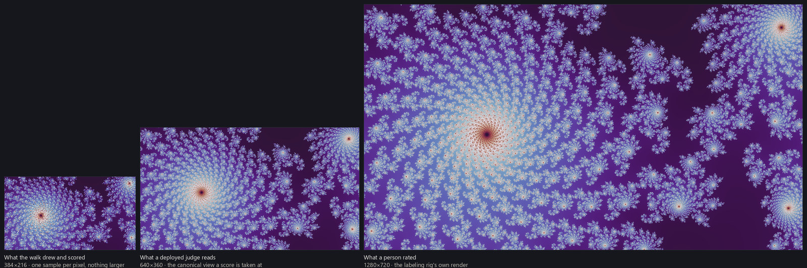
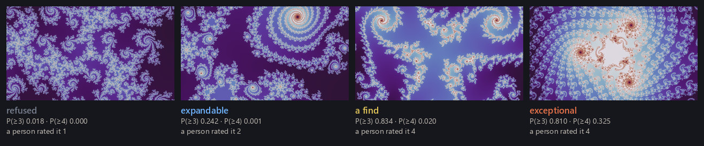

Finding good locations used the location judge on every candidate frame without saying where it came from. This page describes the judges: the ratings they are trained on, the networks, how they are evaluated, and where they generalize and where they do not. Two judges answer quality questions — one for locations and one for finished renders — and they share one rating scale, one network design, and one training recipe. A third, smaller network chooses palettes rather than rating quality; it is trained by a different method and is covered in color palettes.
The rating scale
Every judge is trained on ratings made by hand on the same four-point scale. A 1 is junk: empty, black, or noise. A 2 is unremarkable — something is there, nothing worth keeping. A 3 is good wallpaper material. A 4 is exceptional. The top class is just a class, not a separate bar: nothing in the pipeline treats a 4 differently except to prefer one where it is available.
A few extremes are obvious — a frame that is practically all black, or practically flat — and everything in between depends on taste and on use. I rated everything according to my own preferences for desktop wallpapers, so the judges are trained toward one person's taste; fine-tuning them toward a different taste would be straightforward, and the labeled datasets are published for exactly that purpose (overview).
What is rated differs from judge to judge. A location rating asks whether a place could make a good wallpaper, so the rating is made from two renders of it at once — one in the neutral palette the judge will see, and one in a vivid palette that shows what the geometry can become — and answers for the geometry, not for either picture. A render rating asks whether this picture is worth keeping, and is made from exactly the picture that was rendered: its mode, its settings, its palette. The corpus holds ratings for nearly twelve thousand locations, about five thousand smooth renders, and about three thousand renders in the other modes.
The ratings were gathered iteratively: rate a few hundred, retrain, use the new judge to explore further, and repeat across fractal families, locations, and descent strategies. That history leaves a bias — the judges know best the regions the search has already visited — and the bias shows up downstream as a narrower distribution of final wallpapers than the fractals themselves would support. The last section returns to this.
What the judge sees
The location judge sees a small render of the frame in one fixed neutral palette, and nothing else. It is the same render the walk's gates examined — 384 by 216 pixels, one sample per pixel — so no larger render is drawn for scoring. Ratings, by contrast, are made from full-size renders, and the project uses one intermediate size as well. Rather than pick one, the judge is trained on all three sizes of the same locations, so its verdict does not depend on which resolution it is shown. Convolutional networks turn out to be good at this: composition, framing, and density survive downsampling well, and a judge that has only ever seen the thumbnail still recovers most of what a person sees at full size.

The render judge sees the picture that was drawn to be judged — its mode, its settings and its palette, but drawn small, at 640 by 360, and stretched from there to the network's input. Nothing is judged at wallpaper size; a full-resolution render is what a passing score buys. One judge covers the whole catalog rendering modes described, the plain smooth rendering and the seventeen other modes alike: the two kinds are rated separately and keep separate bars downstream, but the judging itself is one network, trained on both collections of ratings at once. Scoring the two kinds with separate networks was explored as well; a single network performed as well or better despite the visual differences between the kinds, so one judge does both.
Network design and training
The network is small on purpose. Each judge is a MobileNetV4 convolutional network pretrained on ImageNet — about eight million parameters for the location judge, a variant a third that size for the render judge — with its final layer replaced and the whole network then fine-tuned on the ratings. This is standard transfer learning, and its mechanics and its engineering specifics are covered thoroughly elsewhere — the PyTorch transfer-learning tutorial is one good place to start. Nothing in the recipe is unusual. Larger architectures were tried, including vision transformers; none beat MobileNetV4 by more than noise, and it was the fastest and smallest, so it stayed. The size is a finding, not a convenience: with a few thousand ratings behind each question, capacity works against a judge. A medium-sized variant of the same network, trained the same way on the same ratings, was reliably worse on the seventeen modes — the kind with the fewest ratings — and the deficit vanished when the backbone shrank. At this scale of data the real fight is overfitting, and the smallest network that can still see composition and framing wins it.
A four-point rating is ordered, not categorical: a 3 is closer to a 4 than a 1 is, and an ordinary classifier throws that ordering away. Keeping it is the one place the recipe is fitted to this problem rather than taken off the shelf. The judges are trained by ordinal regression — three yes-or-no questions, "at least a 2?", "at least a 3?", "at least a 4?", each asked only of pictures that already passed the one before, so the three answers can never contradict each other. Multiplying them gives the two probabilities the pipeline acts on: P(≥3), the chance a picture would be rated at least good, which is what the walk's floors on the previous page are thresholds on, and P(≥4), the chance it would be rated exceptional.
The rest of the recipe is ordinary: forty epochs, a cosine learning-rate schedule, under two hours on one GPU for the location judge and under an hour for the render judge. Augmentation is deliberately narrow. The location judge is only ever shown one fixed neutral palette, so jittering hue or saturation would train it on colors it will never be given; what it gets instead is the variation that is real at deployment — small border crops, flips, JPEG re-encoding around the quality its renders are cached at, and brightness and contrast changes of a few percent. The render judge gets crops and flips and nothing else, because for it the coloring is the question, and any change to it edits what is being asked.
Evaluating a judge
A judge is evaluated on ratings it never trained on, and the held-out set has to be drawn without the judge's help: a set of locations a judge scored well is not a test of that judge. Those sets are drawn by methods that never consult a score, and are held out by neighborhood rather than by frame, because nearby frames are near-duplicates and a judge could otherwise pass by memorizing a location's neighbor.
Agreement with those ratings is the plain way to say how well that goes. The location judge picks the person's own class most of the time, and lands within one class of it almost always. The render judge is within one class about as reliably and hits the exact class less often. One class of disagreement is the shape the ratings take among themselves, since two ratings of the same frame rarely differ by more than one class. But agreement only counts how often the judge and the person land together; it says nothing about whether the judge's probabilities mean what they say, and the pipeline acts on probabilities.
One more thing keeps an evaluation honest: training is stochastic. Retrain the same design on the same ratings with a different random seed and every number moves a little, so no verdict about a design is read off a single training run. A design is trained three times with different seeds and a claim has to hold across all three; quoting the best seed flatters any design, and demanding that every seed pass separately fails a perfectly good one by luck alone. What ships is the best of the three, by a rule written down before the runs were scored.
Whether a probability can be trusted at the value it names is what calibration measures, and it is measured, never assumed. Training runs are selected on a proper scoring rule — one that rewards a probability for being right at its stated odds, not merely for ranking well — but every retrain still moves the whole probability scale: the next judge scores the same picture differently even when both judges would rank it the same. A threshold read off a probability as though the number were permanent therefore lands in the wrong place after a retrain, and lands wrong in both directions — set too high, a bar starves the pipeline, and a slot with nothing above it goes unfilled rather than being padded; set too low, it spends rendering and coloring time on frames that were never going to be kept. So the pipeline sets each threshold by measurement against the judge that will act on it, which is the subject of the next section.
From a score to a decision
A judge returns a probability; the pipeline acts on thresholds. Where each threshold comes from matters, because a judge's numbers shift every time it is retrained.
The location judge has three thresholds: two on P(≥3), and one on P(≥4). Above the admission floor a frame is recorded as a find; between the expansion floor and the admission floor it may be explored through but is not a find; and above a separate great cut — the one read on P(≥4) — a find is counted as exceptional when the supply is balanced across partitions, the buckets the project keeps its books in: one per family at one degree, with a parameter plane counted apart from its dynamical twin (finding good wallpapers).

Each was set once, and after every retrain the three are restated by volume: over a fixed reference pool of tens of thousands of locations, the new threshold is the score on the new judge that passes the same fraction of the pool as the old threshold passed on the old judge. The restatement reads no ratings; it preserves how much flows, not which frames.
The render judge acts through two bars, one for each kind, because a score is only ever compared within its own kind: the same number can clear one kind's bar and fall short of the other's, and neither reading is wrong. Each bar is read off ratings directly — the score above which a picture had been rated at least good more often than not, found by fitting a monotone curve through that kind's rated pictures, and rounded up, because a bar is a floor. Both bars remove where the gallery is chosen: a slot with no picture over its own kind's bar is left unfilled rather than padded (gallery curation). Only the bar on the seventeen modes acts on what a run itself puts out, which is gated more loosely on purpose. When pictures are ranked for selection, probabilities are never compared across kinds or partitions: each picture is ranked within its own partition and kind, and the lists are interleaved by position — every partition's best, then every second-best. Each bar is stamped with the exact judge it was measured against, and a bar is never applied to a judge it was not measured on.
Generalization and its limits
The aim of a judge is not to memorize the neighborhoods that have already been rated but to learn what makes a frame good — composition, framing, density, a more general sense of aesthetics — well enough to recognize it somewhere new. The judges do this to a useful degree: they have rated highly, and correctly, frames in regions and at depths unlike anything in their training data, and the search depends on that.
The limits are real and follow from how the ratings were gathered. A judge trained iteratively on the harvest of its predecessors is surest about the regions the search has already visited, and least sure about the rest; the bias noted above is this one. Searching for beautiful things with a learned judge therefore needs care: if the judge's taste drifts toward what it has already seen, the search narrows to the regions the corpus already covers. The walk's reserved share of every batch for untouched roots (finding good locations, Prioritize) exists for this reason, and the same concern governs how new batches of locations are chosen for rating.